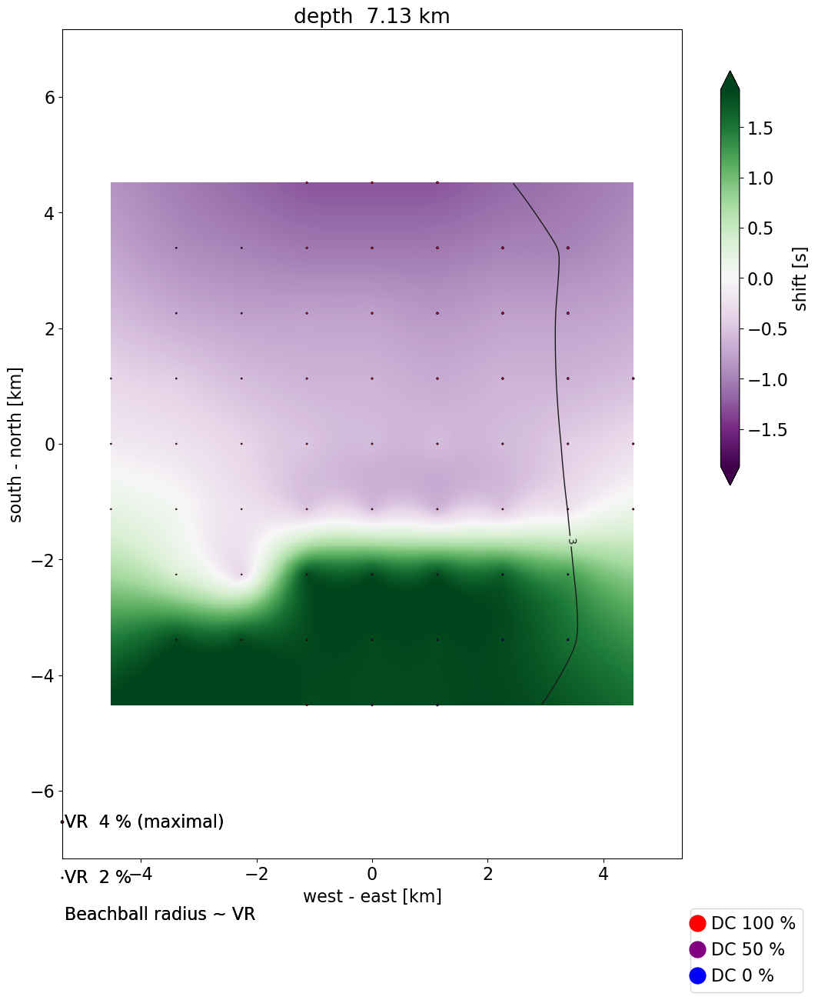
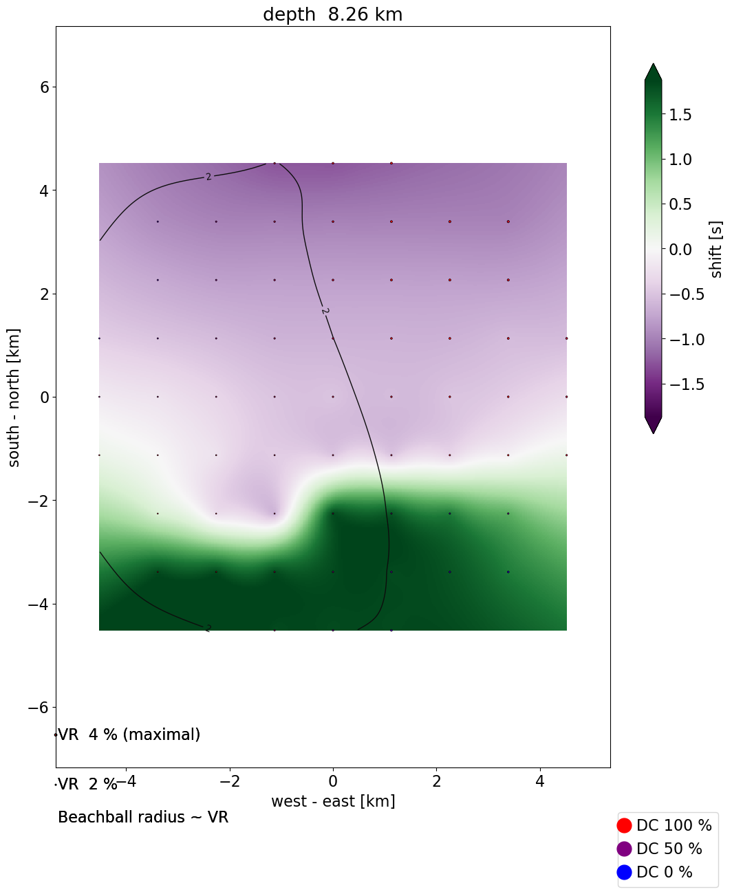
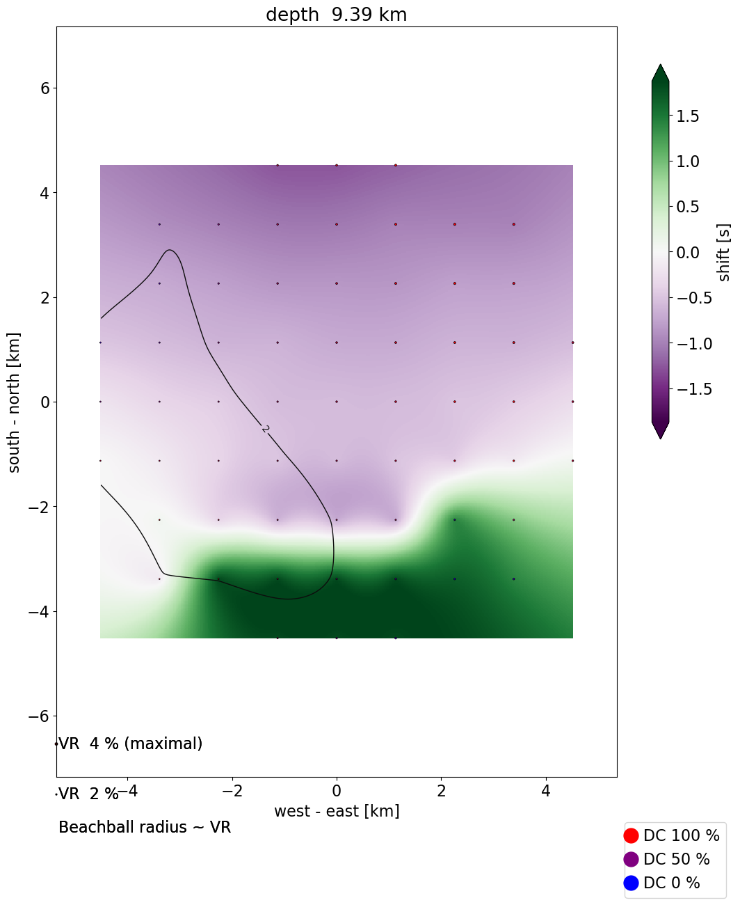
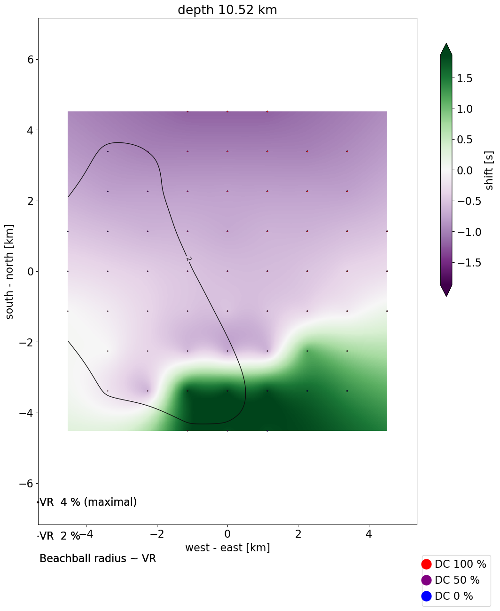
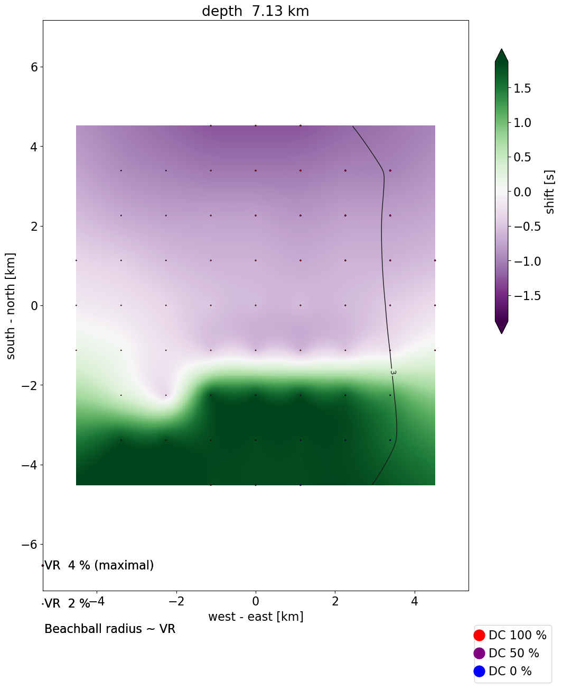
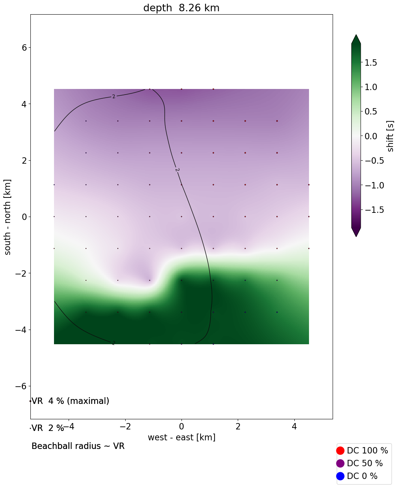
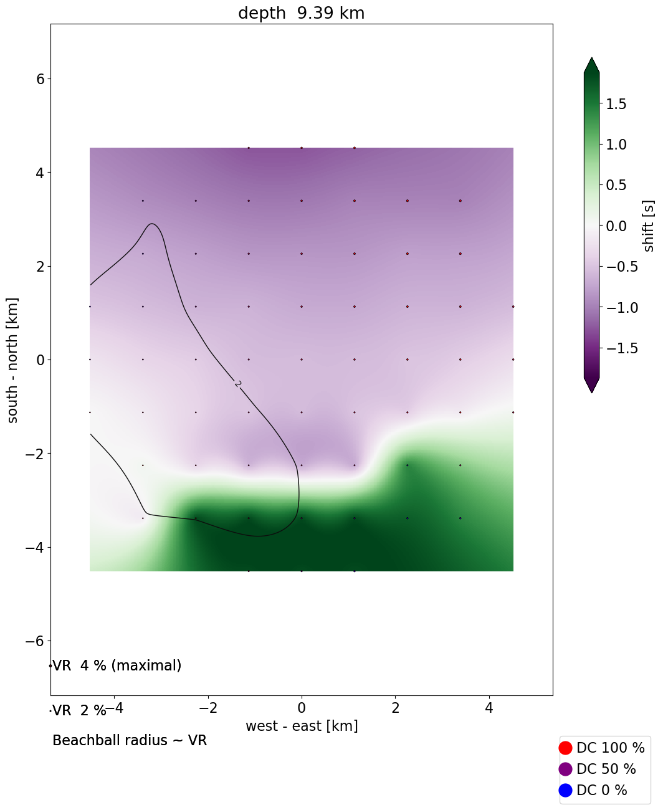
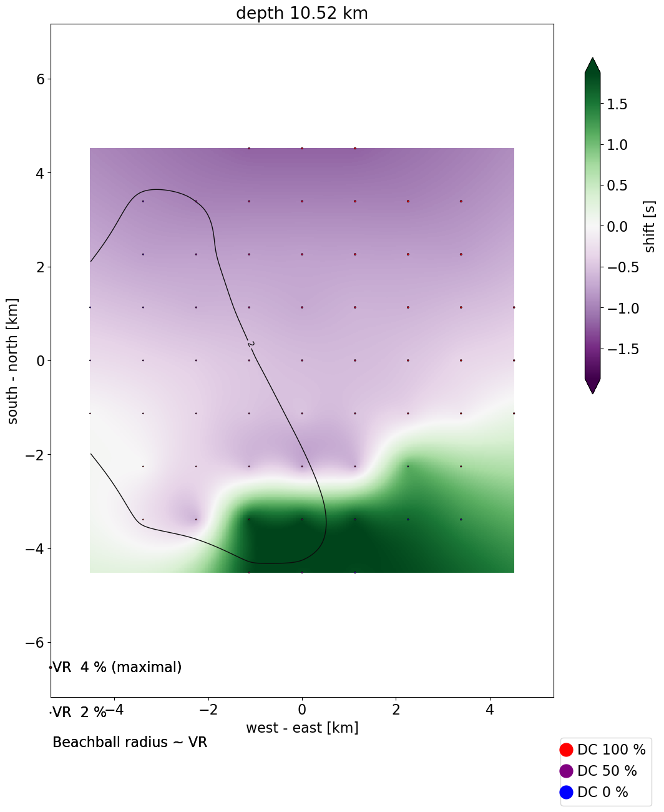

{kind=link}
{kind=link}
{kind=link}
{kind=link}
{kind=link}
{kind=link}
{kind=link}
 







{kind=link}
{kind=link}
{kind=link}
{kind=link}
click to compare different depths
| absolute | relative | |
|---|---|---|
| Time | 2012-04-25 10:34:10 | 0.98 s before origin time |
| Latitude | 38.435° N | 3389 m north of the epicenter |
| Longitude | 22.027° E | 3389 m east of the epicenter |
| Depth | 6.0 km | 0.0 km deeper than location |
Warning: the solution lies on the edge of the grid!
| Centroid position | |
|---|---|
| depth | 6.0 km |
| Seismic moment | |
| scalar seismic moment M0 | 1.27e+15 Nm |
| moment magnitude Mw | 4.0 |
| Moment tensor components | |
| Mrr | -524637808140489.62 * 1e+14 |
| Mθθ | 578368361661209.00 * 1e+14 |
| Mϕϕ | -53730553520719.38 * 1e+14 |
| Mrθ | -628714438168410.62 * 1e+14 |
| Mrϕ | 721815144041588.25 * 1e+14 |
| Mθϕ | -441383244789606.88 * 1e+14 |
| Moment tensor decomposition | |
| DC | 73 % |
| CLVD | 27 % |
| strike | 269 / 137 |
| dip | 23 / 74 |
| rake | -136 / -73 |
| Quality measures | |
| condition number | 3 |
| variance reduction | 4 % |
| station | component | distance * | azimuth | fmin | fmax | |||
|---|---|---|---|---|---|---|---|---|
| code | channel | Z | N | E | (km) | (deg) | (Hz) | (Hz) |
| GR:KALE | HH | 1.0 | 1.0 | 1.0 | 13 | 96 | 0.02 | 0.15 |
| GR:LAKA | HH | 1.0 | 1.0 | 1.0 | 18 | 183 | 0.02 | 0.15 |
| GR:ANX | HH | 1.0 | 1.0 | 1.0 | 22 | 344 | 0.02 | 0.15 |
| GR:PVO | HH | 1.0 | 1.0 | 1.0 | 47 | 300 | 0.02 | 0.15 |
| GR:DSF | HH | 1.0 | 1.0 | 1.0 | 47 | 89 | 0.02 | 0.15 |
| GR:DRO | HH | 1.0 | 1.0 | 1.0 | 56 | 206 | 0.02 | 0.15 |
| GR:GUR | HH | 1.0 | 1.0 | 1.0 | 61 | 149 | 0.02 | 0.15 |
Station coordinates: mti/input/network.stn
Loading data from files.
data dir: mti/invert/sac/
p&z dir: .
{kind=link}
{kind=link}
{kind=link}
{kind=link}